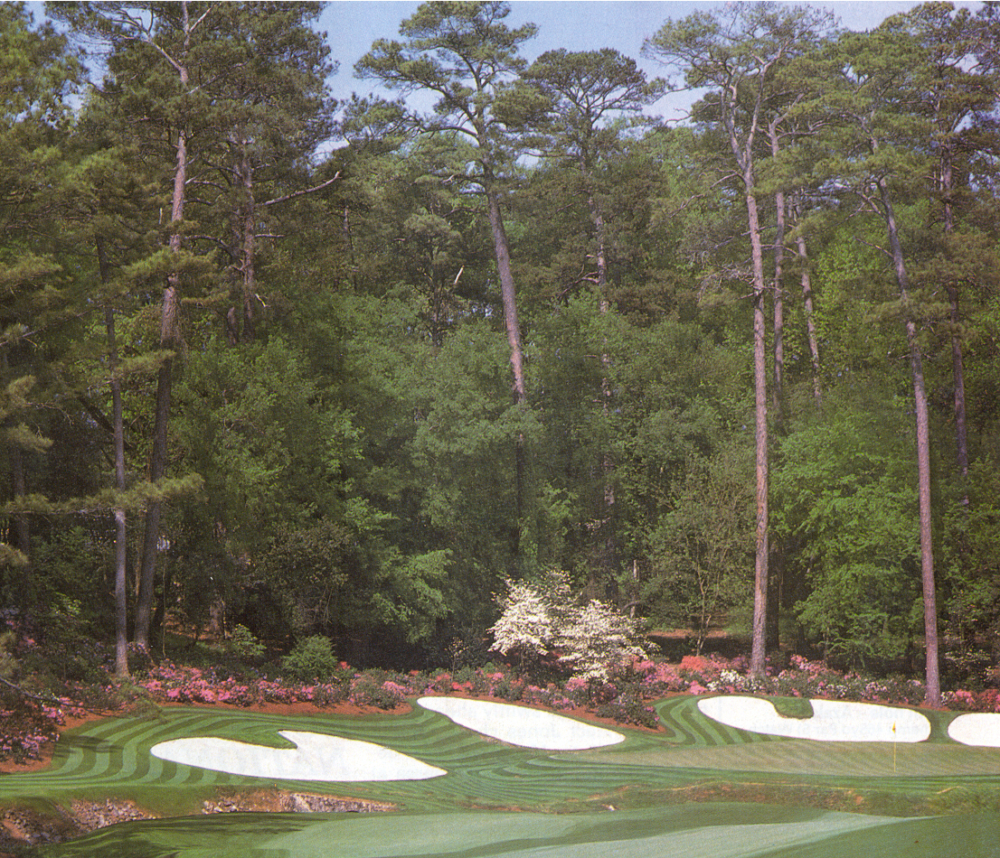

Augusta National
The stunningly beautiful Augusta course set in the American Deep South is the home of the famous Masters tournament. Superb design and lightning-fast greens make it one of the world's best.
Even if they've never set foot on Augusta National's lush greens, most enthusiasts are familiar with this spectacular course, the home of the US Masters. Generous fairways are set against a marvellous landscaping of trees and lakes. It's a dream course: skilfully designed, superbly laid out, impeccably maintained. Augusta looks great, and plays brilliantly.
It's strategically de- signed to be a real test of a player's initiative. Precise positioning of the drive is particularly vital if you are to attack the pin successfully. The course has wide fairways, large greens and few rough areas. There aren't many bunkers - less than 50 altogether. Numerous trees along the fairways are a hazard, but an experienced player should find a path through them.
Green Speed
It's the speed of the greens that makes Augusta a challenge - the putting
surfaces are lightning-fast. The greens are skilfully contoured and demand
extremely accurate putting. A player hoping to birdie has to place his
shot precisely to avoid a downhill putt. The Masters competitor must go
for the greens with his second shot on the par 5s, where many a round is
made or ruined.

A display of shrubs and trees makes the precision-mown Augusta
National a magnificent
setting for the US Masters, played every April. The names of
holes – Flowering, Peach,
Camellia and Juniper – are a reminder that the course was once
a nursery.
The Holes to Watch
|
|
|
|
|